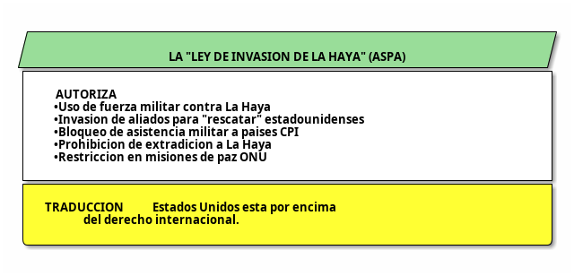
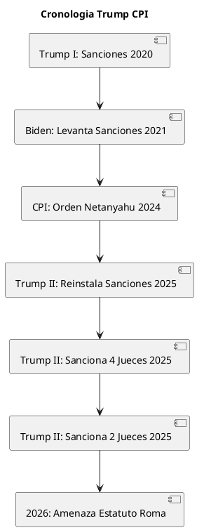
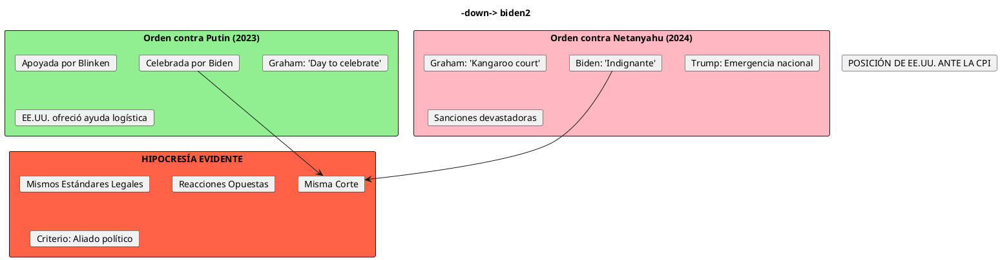
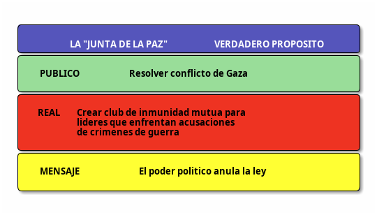

Trump y la Corte Penal Internacional: Anatomía de una Guerra Sistemática contra la Justicia Global
Trump y la Corte Penal Internacional: Anatomía de una Guerra Sistemática contra la Justicia Global
Introducción: La Cruzada Antijusticia de Trump
La "Junta de la Paz" propuesta por Donald Trump no es un episodio aislado de excentricidad diplomática, sino el punto culminante de una campaña sistemática y calculada contra la Corte Penal Internacional (CPI) que se extiende por más de dos décadas de política estadounidense. Sin embargo, bajo Trump, esta oposición ha alcanzado niveles sin precedentes de agresividad institucional, caracterizada por sanciones económicas devastadoras, amenazas militares implícitas, y presiones para modificar los fundamentos mismos del derecho internacional.
Este análisis examina críticamente la posición de Trump frente a la CPI, revelando una estrategia coherente de desmantelamiento del sistema de justicia internacional que protege tanto sus propios intereses políticos como los de aliados acusados de crímenes de guerra.
El Arsenal Legal: La "Ley de Invasión de La Haya"
Génesis y Naturaleza de la ASPA
La American Service-Members' Protection Act (ASPA) de 2002, conocida coloquialmente como la "Ley de Invasión de La Haya", constituye el instrumento legal fundamental de la hostilidad estadounidense hacia la CPI. Firmada por George W. Bush, esta legislación extraordinaria autoriza al presidente estadounidense a usar "todos los medios necesarios y apropiados" para liberar a cualquier ciudadano estadounidense o de países aliados que sea detenido por la CPI.

Significado Geopolítico
La ASPA representa una declaración explícita de excepcionalismo estadounidense: Washington se reserva el derecho de usar la fuerza militar contra una corte internacional y contra aliados de la OTAN si estos arrestan a ciudadanos estadounidenses. Esta es una postura que comparten muy pocos estados: Rusia, China e Israel tampoco son miembros de la CPI, creando una alianza informal de rechazo al sistema de justicia penal internacional.
La ley fue aprobada con amplio apoyo bipartidista (75-19 en el Senado), incluyendo votos de Hillary Clinton y John Kerry, lo que demuestra que la hostilidad hacia la CPI trasciende líneas partidistas en Washington.
Trump: Escalada de la Guerra contra la CPI
Primera Administración (2017-2021): Sentando Precedentes
Durante su primer mandato, Trump intensificó dramáticamente la oposición estadounidense a la CPI, particularmente cuando el tribunal anunció investigaciones sobre presuntos crímenes de guerra estadounidenses en Afganistán.
Orden Ejecutiva 13928 (11 de junio de 2020)
Trump declaró una "emergencia nacional" debido a la "amenaza" que la CPI representa para la seguridad nacional estadounidense. Esta orden:
- Declaró a la CPI una amenaza existencial para Estados Unidos
- Impuso sanciones económicas contra funcionarios de la CPI
- Bloqueó activos y prohibió entrada a EE.UU. de personal del tribunal
- Específicamente sancionó a la fiscal Fatou Bensouda y al director Phakiso Mochochoko
Consecuencias Humanitarias
Las sanciones tuvieron efectos devastadores más allá de sus objetivos nominales. Investigadores, abogados y personal administrativo enfrentaron:
- Bloqueo de cuentas bancarias internacionales
- Imposibilidad de viajar a Estados Unidos
- Paralización de casos de víctimas en Uganda, Afganistán, Congo
- Renuncia del investigador principal del caso Gaza (tenía hijos en EE.UU.)
Segunda Administración (2025-presente): Guerra Total
Orden Ejecutiva de Febrero de 2025
Apenas 18 días después de asumir su segundo mandato, Trump reinstaló y expandió las sanciones contra la CPI, esta vez explícitamente dirigidas a proteger a Israel tras las órdenes de arresto contra Netanyahu y Gallant.
La nueva orden ejecutiva:

Sanciones sin Precedentes: Junio-Diciembre 2025
La administración Trump ha sancionado a:
| Fecha | Objetivo | Razón |
|---|---|---|
| Febrero 2025 | Fiscal Karim Khan | Órdenes de arresto Netanyahu/Gallant |
| Junio 2025 | 4 jueces (Alapini-Gansou, Hohler, Bossa, Ibáñez) | Aprobaron investigación en Gaza y Afganistán |
| Diciembre 2025 | 2 jueces (Lordkipanidze, Damdin) | Rechazaron apelación de Israel |
Total: 7 funcionarios judiciales sancionados, sin precedentes históricos contra una corte internacional.
La Amenaza Más Extrema: Diciembre 2025
En el movimiento más agresivo hasta la fecha, la administración Trump exigió que la CPI modifique el Estatuto de Roma (su documento fundacional) para:
- Garantizar inmunidad permanente a Trump, el vicepresidente J.D. Vance, y funcionarios de alto nivel
- Abandonar investigaciones contra Netanyahu y Gallant
- Cerrar investigación sobre acciones estadounidenses en Afganistán
- Asegurar que "nunca" se investigará a autoridades estadounidenses, "ni ahora, ni en 2029, ni nunca"
Si la CPI no accede, Trump amenaza con "consecuencias tangibles y significativas adicionales", incluyendo potencialmente la invocación de la ASPA.
Análisis Crítico: Motivaciones y Contradicciones
Motivación I: Autoprotección Anticipada
Preocupación por Crímenes Futuros
Un funcionario de la administración Trump admitió abiertamente que existe "conversación abierta" en la comunidad legal internacional sobre investigar a Trump y altos funcionarios por:
- Campaña de ataques contra embarcaciones de presuntos narcotraficantes en América Latina (posibles crímenes de guerra)
- Apoyo militar a Israel durante genocidio en Gaza (complicidad en crímenes contra la humanidad)
- Potenciales violaciones futuras durante deportaciones masivas
- Crímenes relacionados con política migratoria
Esta admisión es extraordinaria: la administración reconoce implícitamente que teme investigación criminal internacional por acciones que planea emprender.
LÓGICA PERVERSA DE TRUMP: 1. Planifico acciones que podrían constituir crímenes de guerra 2. Temo que la CPI me investigue por estos crímenes 3. Por lo tanto, destruyo la CPI preventivamente 4. Luego cometo los crímenes sin consecuencias legales Esto NO es defensa de soberanía nacional. Esto es GARANTIZAR IMPUNIDAD PARA CRÍMENES FUTUROS.
Motivación II: Protección de Israel
Trump ha vinculado explícitamente sus sanciones contra la CPI a la protección de Netanyahu. La Orden Ejecutiva de febrero de 2025 afirma que la CPI "ha abusado de su poder al emitir órdenes de arresto sin fundamento contra el Primer Ministro israelí Benjamin Netanyahu y el ex Ministro de Defensa Yoav Gallant".
Esta postura es particularmente notable porque:
- Trump y altos funcionarios celebraron la orden de arresto contra Putin en 2023
- Biden también celebró la orden contra Putin pero denunció la de Netanyahu
- Estados Unidos aplicó recompensas del Global Criminal Justice Rewards Program para capturar a otros acusados de la CPI (Joseph Kony, Ahmad Harun)
El Doble Estándar Documentado

Motivación III: Desmantelamiento del Multilateralismo
La hostilidad de Trump hacia la CPI es parte de un patrón más amplio de rechazo a instituciones multilaterales:
- Retirada del Acuerdo de París sobre cambio climático
- Abandono del Acuerdo Nuclear con Irán (JCPOA)
- Retirada de la UNESCO
- Amenazas de salida de la OTAN
- Defunding de la OMS durante pandemia
- Oposición a la OMC
- Y ahora, la creación de la "Junta de la Paz" como alternativa a la ONU
Trump ve el orden multilateral liberal como una restricción inaceptable a la soberanía estadounidense, particularmente cuando limita la capacidad de Washington de actuar unilateralmente.
Consecuencias Devastadoras
Para el Funcionamiento de la CPI
Las sanciones han paralizado significativamente las operaciones del tribunal:
Casos Afectados Directamente
| Región | Caso | Impacto |
|---|---|---|
| Uganda | Joseph Kony | Abogados no pueden trabajar en caso |
| Afganistán | Crímenes de guerra talibanes | Investigadora principal renunció |
| Gaza | Crímenes israelíes/Hamas | Investigador principal renunció (hijos en EE.UU.) |
| Congo | Crímenes de lesa humanidad | Personal no puede recibir pagos |
| Darfur | Ahmad Harun | Cooperación legal bloqueada |
Efecto Paralizante
- Personal de la CPI enfrenta amenazas de hasta 20 años de prisión en EE.UU. por "proveer servicios de asesoría" al tribunal
- Abogados estadounidenses especializados en violencia de género no pueden representar a mujeres afganas
- Organizaciones de víctimas pierden representación legal
- Bancos internacionales cierran cuentas de empleados de la CPI por miedo a sanciones secundarias
Para el Derecho Internacional
Precedente de Inmunidad por Poder
La posición de Trump establece un principio devastador: los poderosos están por encima de la ley. Si un presidente estadounidense puede amenazar con invasión militar para evitar responsabilidad legal, ¿qué diferencia hay entre Estados Unidos y cualquier dictadura?
Erosión del Consenso Antimpunidad
Desde Nuremberg (1945-1946), la comunidad internacional construyó laboriosamente un consenso de que ciertos crímenes (genocidio, crímenes de lesa humanidad, crímenes de guerra) no pueden quedar impunes independientemente del poder del perpetrador. Trump está destruyendo sistemáticamente este consenso.
Para Víctimas de Atrocidades
Las verdaderas víctimas de las acciones de Trump son personas concretas:
- Mujeres afganas buscando justicia por violencia sexual sistemática bajo el Talibán
- Niños ugandeses cuyas comunidades fueron destruidas por Joseph Kony
- Palestinos cuyas familias fueron asesinadas en Gaza
- Ucranianos cuyos hijos fueron deportados por Rusia
Todas estas víctimas ven su acceso a la justicia bloqueado porque Trump teme que él mismo pueda ser investigado algún día.
La Junta de la Paz en Contexto
La "Junta de la Paz" ahora cobra un significado completamente diferente cuando se entiende en el contexto de la guerra de Trump contra la CPI:
No es una Iniciativa Aislada
Es el complemento lógico de la destrucción de la CPI:
- Paso 1: Destruir la legitimidad de la CPI mediante sanciones
- Paso 2: Crear estructura alternativa controlada por EE.UU.
- Paso 3: Incluir líderes acusados de crímenes de guerra para normalizarlos
- Paso 4: Reemplazar sistema de justicia internacional con sistema de poder político
"El Eje de la Inconveniencia: Sinergias del Realismo Sucio."
La inclusión de Netanyahu y Putin no es un error o excentricidad: es el punto central del proyecto. Trump está construyendo deliberadamente una coalición de líderes que rechazan la jurisdicción de la CPI y enfrentan posibles procesamientos.

Posiciones de Actores Clave
La Hipocresía Europea
Francia: Caso Paradigmático
Francia ofreció una de las respuestas más reveladoras. Mientras celebró la orden contra Putin en 2023, argumentó que Netanyahu tiene "inmunidad" porque Israel no es miembro de la CPI, convenientemente ignorando que Rusia tampoco lo es.
Esta posición ha sido denunciada como incoherente incluso por juristas franceses, pero revela la primacía de consideraciones políticas sobre principios legales.
Unión Europea: Parálisis
La UE ha condenado las sanciones de Trump pero no ha implementado medidas de bloqueo significativas que protegerían a sus ciudadanos que trabajan para la CPI. Eslovenia y algunos estados han presionado por acción colectiva, pero el bloque permanece dividido.
Organizaciones de Derechos Humanos: Alarma Unánime
- Human Rights Watch: "Comportamiento de estado paria"
- Amnistía Internacional: "Ataque al estado de derecho global"
- Human Rights Data Analysis Group: "Ataque directo al estado de derecho"
- Open Society Justice Initiative: Ha demandado al gobierno de EE.UU. por restricciones inconstitucionales a libertad de expresión
- Expertos de la ONU: "Ataque a la justicia internacional global"
La CPI: Resistencia Bajo Presión
La presidenta de la CPI, la jueza Tomoko Akane, declaró en diciembre de 2025 que el tribunal "nunca aceptará ningún tipo de presión". Sin embargo, el tribunal enfrenta crisis existencial:
- Personal renunciando por miedo
- Imposibilidad de reclutar ciudadanos estadounidenses
- Presión financiera debido a sanciones bancarias secundarias
- Aislamiento diplomático creciente
Conclusiones Analíticas
1. Trump No es una Aberración: Es la Consecuencia Lógica
La hostilidad de Trump hacia la CPI no es nueva ni exclusiva de él. Es la culminación extrema de una política estadounidense bipartidista de rechazo a la jurisdicción internacional sobre ciudadanos estadounidenses. La ASPA fue aprobada con apoyo bipartidista; Clinton firmó el Estatuto de Roma pero dijo que no lo sometería al Senado; Bush "des-firmó" el tratado; Obama mantuvo oposición selectiva.
Lo que diferencia a Trump es la agresividad y la franqueza: dice explícitamente lo que otros presidentes pensaban pero no articulaban.
2. Autoprotección, No Principio
La motivación central de Trump es transparente: teme ser investigado por crímenes que planea cometer. Un funcionario lo admitió: hay "preocupación creciente" de que "en 2029 la CPI centre su atención en el presidente, el vicepresidente, el secretario de guerra y otros".
Esto no es defensa de soberanía nacional. Es garantizar impunidad personal.
3. La Hipocresía es Sistemática, No Accidental
El doble estándar respecto a Putin vs Netanyahu no es un error o inconsistencia: es política deliberada. Estados Unidos apoya la CPI cuando sirve sus intereses (Putin, Kony, Harun) y la destruye cuando amenaza a aliados (Netanyahu) o a sí mismo (Afganistán, operaciones antidroga).
Esta selectividad destruye cualquier pretensión de que EE.UU. defiende "principios" o "estado de derecho".
4. El Proyecto es Coherente: Impunidad por Diseño
La "Junta de la Paz" no es excentricidad aislada. Es parte de un proyecto coherente:
a) Destruir la CPI mediante sanciones económicas y amenazas militares b) Crear estructura alternativa controlada por Washington c) Incluir líderes acusados para normalizarlos y protegerlos mutuamente d) Reemplazar justicia internacional con política de poder
5. Las Víctimas Reales son Invisibilizadas
El debate mediático se centra en Trump, Netanyahu, Putin. Pero las víctimas reales son:
- Mujeres afganas sin acceso a justicia
- Familias palestinas destruidas en Gaza
- Comunidades ugandesas aterrorizadas por Kony
- Niños ucranianos deportados ilegalmente
Estas voces están ausentes del debate, precisamente porque carecen del poder que Trump, Netanyahu y Putin poseen.
6. Probabilidad de Éxito del Proyecto de Trump
| Objetivo | Probabilidad | Justificación |
|---|---|---|
| Paralizar CPI operativamente | 60% | Ya está ocurriendo; renuncias y parálisis documentadas |
| Modificar Estatuto de Roma | 5% | CPI ha rechazado presión; requeriría consenso de 123 estados miembros |
| Lograr inmunidad legal para Trump | 40% | Puede lograr impunidad práctica sin modificar Estatuto |
| Legitimar a Netanyahu/Putin | 25% | Órdenes de arresto permanecen; restricciones de viaje continúan |
| Consolidar Junta de la Paz como alternativa a ONU | 20% | Oposición europea y de sociedad civil demasiado fuerte |
| Debilitar permanentemente CPI | 70% | Daño ya es significativo; legitimidad erosionada |
Reflexión Final: ¿El Fin del Derecho Internacional?
La campaña de Trump contra la CPI plantea una pregunta fundamental sobre el futuro del orden internacional: ¿puede existir un sistema de derecho internacional cuando las superpotencias rechazan explícitamente la jurisdicción sobre sus propios ciudadanos?
La respuesta histórica sugiere pesimismo. La Liga de Naciones colapsó precisamente porque las grandes potencias la ignoraron cuando les convenía. La ONU sobrevive porque el Consejo de Seguridad da a las potencias poder de veto, es decir, inmunidad estructural.
La CPI intentó crear un sistema donde incluso los poderosos pudieran ser responsabilizados. Trump está demostrando los límites de ese proyecto: cuando un poder suficientemente grande decide destruir una institución internacional, puede hacerlo, especialmente si está dispuesto a usar sanciones económicas devastadoras y amenazar con fuerza militar.
La inclusión de Netanyahu y Putin en la "Junta de la Paz" no es simplemente irónica o hipócrita. Es una declaración ideológica: el poder define lo que es aceptable, no la ley. Los vencedores escriben las reglas, y los poderosos están exentos de ellas.
Esta no es una visión de paz. Es una visión de impunidad sistémica, donde las atrocidades quedan impunes siempre que sean cometidas por quienes tienen suficiente poder político, militar y económico para resistir la rendición de cuentas.
Las víctimas de crímenes de guerra en Gaza, Ucrania, Afganistán y en todas partes pagan el precio de esta excentricidad calculada que Trump presenta como diplomacia innovadora.
Referencias Documentales
- PBS News Weekend. "How sanctions imposed by Trump are taking a toll on the International Criminal Court". 16 noviembre 2025.
- The White House. "Imposing Sanctions on the International Criminal Court - Executive Order". 10 febrero 2025.
- Truthout. "Trump Administration Reportedly Pushing ICC to Exempt Trump From War Crimes Prosecution". 10 diciembre 2025.
- Human Rights Data Analysis Group. "Trump Administration's Sanctions on the ICC are an Attack on the Rule of Law". 5 enero 2026.
- Amnesty International. "What do the Trump administration's sanctions on the ICC mean for justice and human rights?" 28 marzo 2025.
- Foreign Policy. "Trump's Pressure Campaign Against the ICC Reaches New Heights". 10 diciembre 2025.
- International Bar Association. "US presidency: ICC sanctions threaten the future of international justice". 2025.
- Human Rights Watch. "U.S.: 'Hague Invasion Act' Becomes Law". 3 agosto 2002.
- Middle East Eye. "Explainer: US lawmakers threaten ICC with 'The Hague Invasion Act' - but what is it?" 26 noviembre 2024.
- CNN. "Trump administration sanctions two more International Criminal Court judges for investigating Israel". 18 diciembre 2025.
"La igualdad ante la ley debe aplicarse a todos, incluido el Presidente de Estados Unidos. Aquellos en el poder nunca deben socavar una corte por temor a que pueda centrar su atención en ellos." — Human Rights Data Analysis Group, Enero 2026
La "Alianza de la Paz" de Trump: Análisis Crítico de una Iniciativa Geopolítica Controvertida
—
Nota crítica final: Este análisis se basa en documentación oficial, órdenes ejecutivas publicadas, testimonios de funcionarios de la administración Trump, y reportes de organizaciones de derechos humanos. Las conclusiones representan un análisis crítico fundamentado en evidencia verificable sobre una de las campañas más agresivas contra una institución de justicia internacional en la historia moderna.